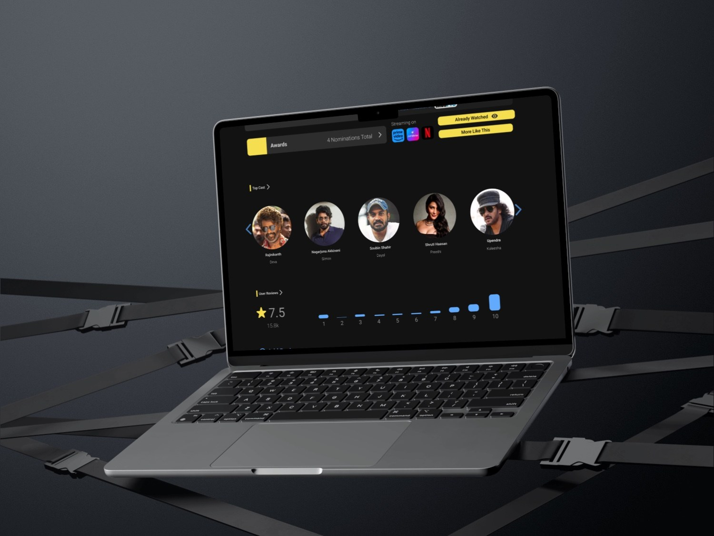

IMDB
REDESIGN
Improving consistency across IMDb pages with cleaner hierarchy, standardized components, and faster entertainment browsing.
Download PDF
CONTEXT
This redesign started from a personal experience using IMDb, where inconsistent layouts across pages made the interface feel fragmented and harder to navigate.
PROBLEM
IMDb has a lot of useful movie information, but page structures, spacing, and interaction patterns can vary across the experience. That increases cognitive load and makes browsing feel less predictable.
GOAL
Create a more coordinated interface with clearer hierarchy, standardized components, and predictable page patterns while keeping the entertainment discovery mood intact.
PROCESS
- Identified inconsistencies across key IMDb pages.
- Focused on layout, spacing, card hierarchy, and reusable interface patterns.
- Aligned the visual language with a cleaner dark entertainment interface.
- Designed high-fidelity desktop screens and mockups in Figma.
OUTCOME
The final direction improves scanning, reduces layout confusion, and makes the experience feel more unified without adding unnecessary features.
VISUALS
